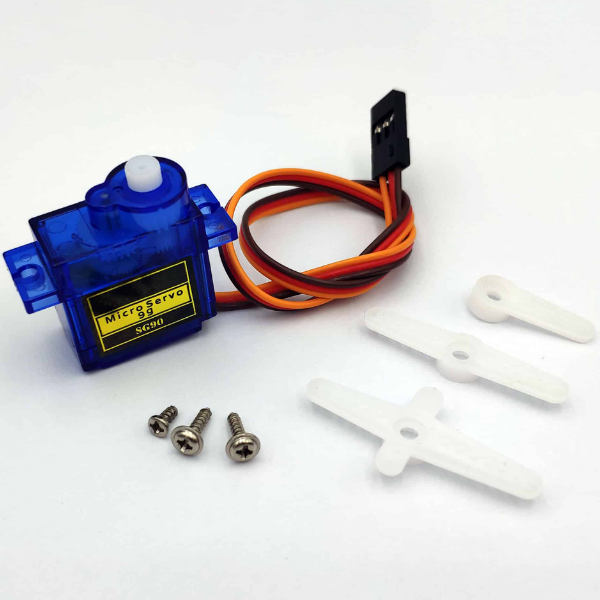

3. Đèn LED màu kích thích cây trồng

Đèn LED màu kích thích cây trồng được ứng dụng trong các dự án như kích thích cây sinh trưởng trong môi trường thiếu sáng. Nếu bạn mới tiếp xúc và làm quen với các dự án IoT, đây sẽ là module phù hợp với bạn.
Attention
Đèn LED này sử dụng cổng USB, không tương thích với cổng cắm Grove của Yolo:Bit. Do đó, bạn cần sử dụng thêm module đóng ngắt 2 kênh khi thực hành kết nối đèn LED màu với Yolo:Bit để làm các dự án STEM thông minh nhé!
1. Mua sản phẩm

2. Kết nối
Bước 1: Chuẩn bị các thiết bị như sau:

|

|
 |
|
|---|---|---|---|
Máy tính lập trình Yolo:Bit |
Mạch mở rộng cho Yolo:Bit |
Module đóng ngắt 2 kênh (kèm dây Grove) |
Đèn LED màu kích thích cây trồng |
{kind=link}
Bước 2: Cắm Yolo:Bit vào mạch mở rộng
Bước 3: Kết nối đèn LED với module đóng ngắt 2 kênh
Bước 4: Kết nối thiết bị vào chân P14/P15 trên mạch mở rộng

Để làm việc với module đóng ngắt 2 kênh, bạn sẽ kết nối vào cổng có 2 chân kết nối.
4. Hướng dẫn lập trình
Bước 1: Tải thư viện AIOT KIT, xem hướng dẫn tải thư viện tại đây

Sau khi tải thư viện, trong danh mục khối lệnh sẽ xuất hiện các khối lệnh tương ứng:

Bước 2: Hãy gửi chương trình sau đến Yolo:Bit của bạn:

Note
Giải thích chương trình:
Chúng ta sẽ sử dụng nút A trên mạch Yolo:Bit để bật đèn ở độ sáng 70%. Nút B để chuyển đèn về độ sáng 0% (tắt đèn).
Bạn có thể thay đổi độ sáng của đèn trong chương trình.